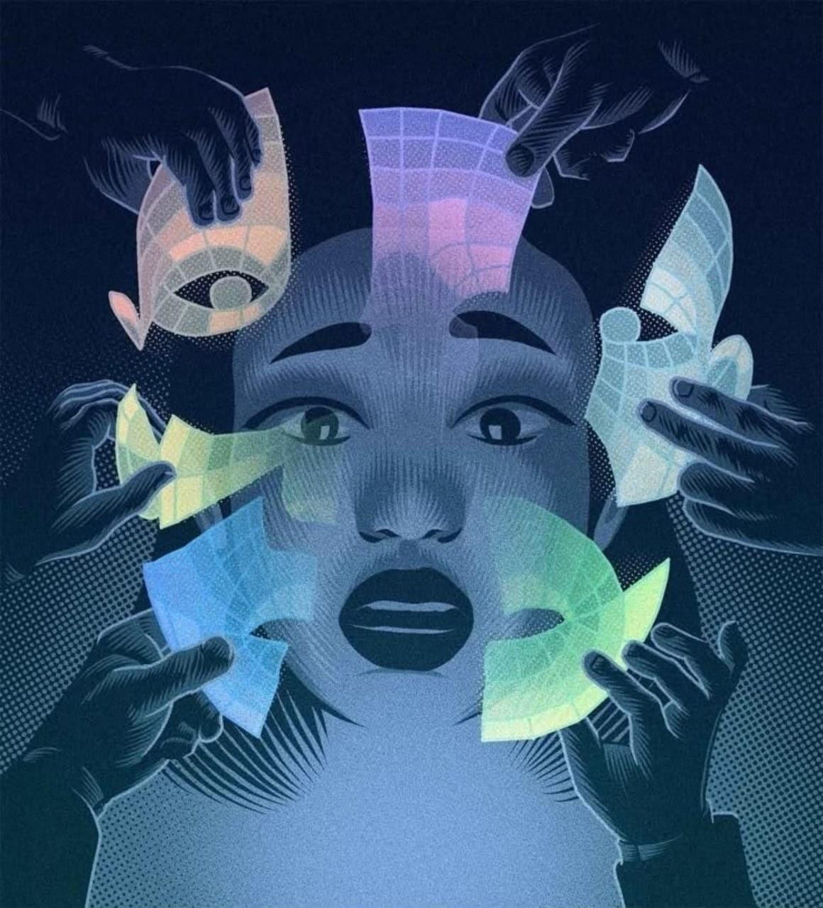

الشخص الذي نراه في المرآة
كيف تتكوّن صورتنا عن أنفسنا؟ وهل تعكس سلوكنا الحقيقي أم القصة التي اعتدنا روايتها؟
اكتشف المحورنحن نملك حكاية عن أنفسنا؛ عن الأشخاص الذين نحن عليهم، والمبادئ التي نؤمن بها، والقرارات التي نظن أننا سنتخذها. لكن ماذا يحدث حين نواجه أنفسنا بما نفعله فعلًا؟
السؤال ليس مَن أنت فقط، بل كيف وصلت إلى هذه الصورة عن نفسك.
قد تصف نفسك بأنك شجاع، ثم تتراجع عندما يصبح القرار مكلفًا. وقد تؤمن بأنك مستقل في تفكيرك، ثم تكتشف أن وجود الآخرين غيّر الطريقة التي عبّرت بها عن رأيك.
لا يعني ذلك بالضرورة أنك تكذب على نفسك، ولا أن شخصيتك مجرد وهم. فالإنسان أعقد من وصف واحد، وسلوكه يتأثر بالموقف والذاكرة والعادات والبيئة الاجتماعية.
لكن هناك سؤالًا يستحق التحقيق: إلى أي مدى نعرف دوافعنا فعلًا؟ وإلى أي مدى نبني فهمنا لأنفسنا من الحكايات التي نكررها عنها؟
ربما لا تكمن المشكلة في أننا لا نعرف أنفسنا، بل في أننا نثق أحيانًا في معرفتنا بها أكثر مما ينبغي.
سنقترب من صورتنا الذاتية، وقراراتنا، وتأثير الجماعة، ثم نعود إلى السؤال الأصعب: كيف نختبر أفكارنا عن أنفسنا من دون أن نستبدل يقينًا بآخر؟
كيف تتكوّن صورتنا عن أنفسنا؟ وهل تعكس سلوكنا الحقيقي أم القصة التي اعتدنا روايتها؟
اكتشف المحورلماذا لا تتحول نوايانا دائمًا إلى أفعال؟ وماذا تكشف الفجوة بين الاثنين؟
اكتشف المحوركيف يمكن للمجموعة أن تؤثر في أحكامنا، حتى عندما نعتقد أننا نفكر باستقلالية؟
اكتشف المحوركيف نراجع أحكامنا عن أنفسنا، ونفرّق بين الوقائع والتفسيرات والانطباعات؟
ابدأ التجربةحين نسأل شخصًا عن نفسه، فإنه لا يقدم قائمة محايدة بكل ما فعله في حياته. إنه يختار ذكريات معينة، ويمنحها معنى، ثم يربط بينها ليصنع وصفًا متماسكًا لشخصيته.
قد يقول أحدهم: «أنا لا أخاف المواجهة»، مستندًا إلى موقف دافع فيه عن رأيه. لكنه ربما يتجاهل مواقف أخرى فضّل فيها الصمت، أو لم يلاحظ أصلًا أنه تجنب المواجهة.
لا يكفي مثال واحد لإثبات صفة دائمة، كما أن موقفًا معاكسًا لا يمحوها بالضرورة. فهم الشخصية يحتاج إلى ملاحظة أنماط تتكرر عبر مواقف مختلفة.
بحثت دراسات في علم النفس الاجتماعي في حدود قدرة الإنسان على تفسير بعض عملياته العقلية. وقد يجد الأشخاص صعوبة في تحديد الأسباب الدقيقة التي أثرت في بعض أحكامهم، حتى عندما يستطيعون تقديم تفسير يبدو مقنعًا.
هذا لا يعني أن كل تفسير نقدمه لأنفسنا خاطئ، بل يعني أن الشعور باليقين ليس دليلًا كافيًا وحده على دقة التفسير.
وصفك لنفسك نقطة بداية لفهمها، وليس حكمًا نهائيًا يمنعك من مراجعة سلوكك أو اكتشاف جوانب جديدة.
نعرف أحيانًا ما نريد تغييره، ونضع لأنفسنا أهدافًا واضحة، ثم نجد أن سلوكنا اليومي لا يتفق تمامًا مع ما خططنا له.
قد نرغب في الاستماع إلى الآخرين، لكننا نقاطعهم عندما نشعر بالانزعاج. وقد نؤمن بأهمية الالتزام، ثم نتأخر عندما تتزاحم مسؤولياتنا.
الفجوة بين النية والفعل لا تكشف وحدها عن حقيقة ثابتة في الشخصية. فقد تتأثر بالضغط، والوقت، والعادات، والظروف المحيطة، ومدى سهولة تنفيذ القرار.
بدلًا من الاكتفاء بقول «أنا شخص ملتزم» أو «أنا شخص غير ملتزم»، يمكننا النظر إلى مواقف محددة: ما الذي خططنا له؟ ما الذي حدث؟ وما الظروف التي ساعدت أو أعاقت التنفيذ؟
هذه الطريقة لا تحول كل موقف إلى حكم على الشخصية، لكنها تمنحنا معلومات عملية تساعدنا على تعديل سلوكنا.
ما الصفة التي تنسبها إلى نفسك؟ وما السلوك المتكرر الذي تستند إليه عندما تصف نفسك بها؟
الهدف ليس اكتشاف عيب خفي في شخصيتك، بل التوقف أمام بعض الافتراضات التي قد نتعامل معها باعتبارها حقائق.
ما الصفة التي تكرر وصف نفسك بها؟ وما المواقف الفعلية التي تدعم هذا الوصف؟
هل تتصرف بالطريقة نفسها عندما تكون وحدك، وعندما تكون وسط أشخاص يهمك رأيهم؟
متى كانت آخر مرة غيّرت فيها رأيك بعد أن ظهرت معلومات جديدة؟ وما الذي أقنعك؟
هل تحكم على نفسك من موقف واحد، أم تنظر إلى نمط متكرر عبر مواقف مختلفة؟
اختر موقفًا تتذكره، واكتب ما حدث وما فعلته، ثم جرّب تفسيرًا محتملًا. هذه التجربة أداة للتأمل، وليست اختبارًا نفسيًا أو تشخيصًا لشخصيتك.
لا توجد إجابة واحدة تحدد مَن أنت، ولا يمكن استنتاج شخصيتك كاملة من موقف منفرد.
فهم النفس لا يتطلب الشك في كل شيء، بل يحتاج إلى فضول صادق، وملاحظة جيدة، واستعداد لمراجعة الأحكام.
اكتب ما حدث أولًا، ثم اكتب تفسيرك له. قد يساعدك الفصل بين الاثنين على ملاحظة افتراضات لم تكن واضحة في البداية.
لا تجعل موقفًا واحدًا تعريفًا كاملًا لشخصيتك. لاحظ ما يتكرر، وفي أي ظروف، وما الذي يختلف عندما تتغير الظروف.
مراجعة رأيك عندما تتوفر أدلة جديدة ليست تناقضًا بالضرورة. قد تكون علامة على أنك تتعامل مع أفكارك باعتبارها قابلة للفحص.
لا يقدم علم النفس إجابة سحرية تكشف حقيقة الإنسان في اختبار قصير، ولا تختصرنا تجربة واحدة أو صفة واحدة. ما نستطيع فعله هو الاقتراب من أنفسنا بطريقة أكثر انتباهًا، وفحص ما نعتقده في ضوء ما نلاحظه فعلًا.
قد تكتشف أن بعض أفكارك عن نفسك دقيقة، وأن بعضها يحتاج إلى مراجعة، وأن بعض الأسئلة ستظل مفتوحة لفترة. لا بأس بذلك؛ فالفهم عملية مستمرة، لا حكم نهائي.
لا تصدّق كل ما تقوله عن نفسك لمجرد أنك اعتدت قوله. افهمه، واختبره، واترك للواقع فرصة أن يفاجئك.
الأفكار العلمية تحتاج إلى مراجع يمكن الرجوع إليها. هذه قائمة بأعمال مرتبطة بالوعي الذاتي والتأثير الاجتماعي والتنافر المعرفي، وليست دليلًا على صحة كل استنتاج ورد في التحقيق.
Richard E. Nisbett & Timothy D. Wilson — 1977. دراسة كلاسيكية تناقش حدود التقارير الذاتية عن بعض العمليات العقلية.
قراءة المرجع العلميSolomon E. Asch — 1956. من الأعمال المعروفة التي درست أثر ضغط الجماعة في الأحكام.
الاطلاع على الدراسةLeon Festinger — 1957. كتاب مؤثر في دراسة التوتر الذي قد ينشأ عندما تتعارض المعتقدات أو المواقف أو الأفعال.
مجال بحثي واسع يدرس الفروق الفردية وكيفية فهم الشخصية والسلوك في سياقات متعددة. يمكن استخدام قواعد البيانات الأكاديمية للبحث عن مراجعات علمية حديثة في هذا المجال.
البحث في الأدبيات العلميةدورية علمية تنشر أبحاثًا في مجالات علم النفس المعرفي والاجتماعي والسلوكي.
استكشاف الأبحاث المنشورة
حين لا يكون رأينا ملكنا وحدنا
تخيّل أنك تجلس وسط مجموعة تتفق على إجابة معينة، بينما تشير ملاحظتك إلى إجابة مختلفة. هل ستقول ما تراه، أم ستتردد لأنك لا تريد أن تكون الشخص الوحيد المخالف؟
درست تجارب علم النفس الاجتماعي تأثير ضغط الجماعة في الأحكام. وفي إحدى التجارب الشهيرة التي أجراها سولومون آش، واجه المشاركون مواقف تتعلق بمقارنة أطوال خطوط، في وجود أشخاص قدموا إجابات متوافقة عمدًا.
أظهرت النتائج أن بعض المشاركين وافقوا المجموعة في بعض المرات رغم تعارض إجاباتها مع ما يرونه. لكن النتائج لا تعني أن جميع الناس يتبعون الجماعة دائمًا؛ فالتأثير يختلف باختلاف الأشخاص والظروف.
الانتماء والاستقلال ليسا نقيضين دائمًا
التأثر بالآخرين ليس عيبًا في حد ذاته. فنحن نتعلم اجتماعيًا، ونستفيد من الخبرة المشتركة، ونراجع آراءنا عندما تظهر معلومات جديدة.
المسألة الأهم هي أن نميز بين تغيير الرأي لأننا اقتنعنا بأسباب جديدة، وتغييره لمجرد تجنب الرفض أو الإحراج.
تذكّر
الاستقلال في التفكير لا يعني مخالفة الجميع، بل القدرة على فحص الأسباب قبل الموافقة أو الرفض.

FIG. 03